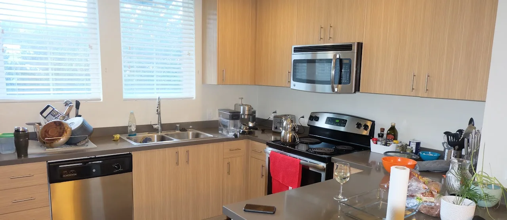

Less than two months later and I am in a new apartment, again. I anticipate one more move in the next months, but hopefully that will be the last for a while. It takes a lot of spiritual energy to move between places. But I am finally done unpacking at the new place. I now live in Mountain View, at a very convenient location within a walk of supermarkets, restaurants, and lovely parks. I am excited about this new leaf I am turning. Home should be a sanctuary, a place of refuge, where one can put their hair down. With my 4th apartment, I now know that there is nothing I would not give to ensure I feel safe, comfortable, and secure, in all the places - physical and abstract - I call home.
As always, I begin my reflection in the kitchen. The new kitchen comes with plenty of countertop space. I also like the dark grey stone used on the countertops. It seems I have a preference for monochromatic countertops on the dark end of the spectrum. The "piney" cupboards complement the grey so well. It feels spacious and full of light. I am especially thrilled that the appliances are modern and digital - unlike at the previous spot. You have no idea how life changing a dishwasher that actually dries your dishes and an oven that you can peek in at your food without needing to open the door can be. You might remember I complained about the fridge at the previous apartment, and so you would understand my ecstasy at having a fridge with climate-controlled drawers for my vegetables and fruits. I think I have an idea of the minimum requirements of my future kitchens.
The living and dining area is about two-thirds of at the previous spot. Consequently, it feels a bit cramped. In fact, only 2 of the 4 chairs at the dining table can be used. The other two are under the table against the wall. But that should not be much of a problem as I think I am going to take a break from co-hosting sizable social gatherings. In this most recent move, I had to part ways with the large television and sound system. When I settle in at my next stop, which would be for an extended minute, I will be sure to buy a large television because my telenovelas and movies do not feel the same on a standard television. Am I Taurus or what? As I said, comfort is a nonnegotiable in all the places I call home. I have a feeling I am going to be parting with a lot of my current property when I make my next move. Some of them have served me for almost as long as I have been in the United States. My futon, especially, has begun to feel like a burden.
I am conflicted on how I feel about my bathroom. On the one hand I am thrilled by all the space it has, but on the other hand I am sad that they did not use that additional space to make my bedroom just a tad bit bigger. But in any case, the shower head has a satisfactorily large circumference and the water pressure is acceptable. There is plenty of slots to keep my bath products. The bathtub is also spacious and able to fit two people comfortably. What more could I ask for? Well, maybe I would have preferred to have glass doors instead of a shower curtain. But there is a large mirror and a toilet paper holder, so I will not complain much. Because it is spacious, I have put my two sets of dumbbells in there for the two days in a year when I feel motivated to try and work out. The medicine cabinet is also quite modern, the best I have had so far.
The bedroom is so small I thought I was going to suffocate. But I have been able to unpack and use my engineering mind to optimize the limited space. I miss having a hangout lounge in my room, but at least I have a dedicated work corner where I will not need to use a zoom background because it provides enough privacy. I echo what I said in my last post, when I grow up my office will not be in the bedroom. I also have setup one of my televisions at the foot of my bed which makes it ideal for movies in bed. I am holding back from decorating the room because my housemate informed me that he might be moving out soon, in which case I will assume the master bedroom. The closet here is smaller than at all 3 of my previous apartments, and worst of all, it does not have sliding doors with floor-to-ceiling mirrors. Now I am unable to check myself out all day as I work. I guess that will minimize my vanity.
I lament the circumstances that have inspired this move and abruptly closed a chapter of my life that held so much promise. But while my heart grieves, my soul knows that just as much as that chapter had its heights, there is plenty more heights to be reached in the chapters that will follow. May I not wish for the chapters of my life to never end, but instead do all I can to make each of them the best story that they can be. This next chapter is off to a great start. Except for my bedroom, the apartment is carpet-free. I hate carpeted apartments! Unlike at the previous apartment, I doubt I would be seeing rats outside in the evenings. But the best source of comfort comes from having an in-unit washer and dryer. That is going to be a nonnegotiable in my future apartments. It is important in this life to know and communicate one's nonnegotiables.
← Return to Blog